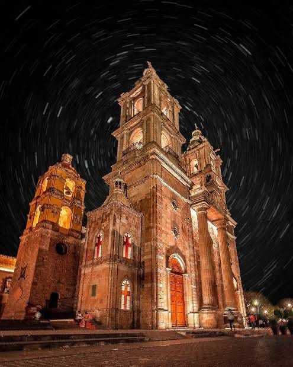
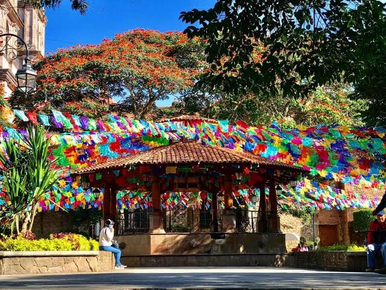
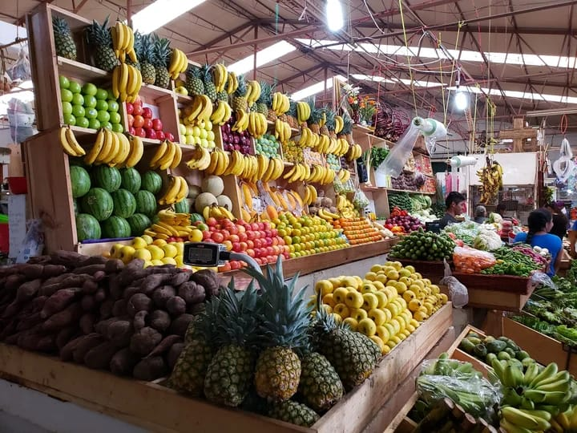

La iglesia de San Francisco de Asís destaca por su arquitectura y belleza. Es uno de los principales símbolos del centro histórico de Valle de Bravo. Su construcción representa parte de la historia religiosa y cultural del municipio, además de ser un punto de referencia para habitantes y turistas que recorren sus calles.
Su fachada de estilo arquitectónico colonial, sus detalles ornamentales y su ambiente tranquilo la convierten en uno de los lugares más representativos de la localidad. En sus alrededores se pueden encontrar calles empedradas, establecimientos comerciales y espacios donde los visitantes disfrutan de la esencia del pueblo. También es un sitio importante para las celebraciones religiosas y las actividades culturales de la comunidad.

El kiosco se encuentra en el centro del municipio y es un punto de reunión para visitantes y habitantes. Está rodeado de jardines y espacios para disfrutar. Su ubicación permite apreciar el movimiento cotidiano del centro y observar la arquitectura característica de los alrededores.
Este espacio es ideal para descansar, pasear y disfrutar del ambiente de Valle de Bravo. En sus alrededores se realizan diferentes actividades sociales, culturales y recreativas. Además, es un lugar frecuentado por familias y turistas que aprovechan para tomar fotografías, conocer los establecimientos cercanos y disfrutar de la tranquilidad de la plaza principal.

El mercado es un lugar lleno de sabores, colores y productos locales, donde los visitantes pueden conocer parte de la gastronomía y actividad comercial del municipio. En sus diferentes puestos se encuentran frutas, verduras, alimentos preparados, ingredientes regionales y una gran variedad de productos utilizados en la vida cotidiana.
Recorrer sus pasillos permite descubrir la riqueza gastronómica de la región y disfrutar de platillos que forman parte de la cocina mexicana. También es un espacio donde comerciantes y productores ofrecen sus mercancías, manteniendo viva la actividad económica local. Su ambiente, variedad de productos y atención hacen del mercado un sitio interesante para quienes desean conocer más sobre las costumbres y sabores de Valle de Bravo.
¡Conoce, disfruta y comparte nuestras maravillas!
VER VIDEO EN TIKTOK